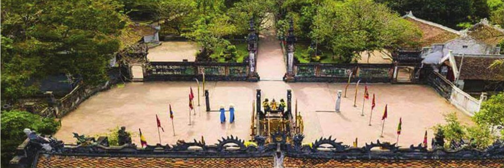

CỐ ĐÔ HOA LƯ
遗迹概况

华闾古都历史文化遗迹是一个特别的国家级遗迹群。在历史上，华闾首次成为越南中央集权封建国家的国都。这里是丁、前黎以及李朝初期三个朝代豪迈事业的发祥地。
968年，国家统一后，丁部领登基称帝，定国号为大瞿越，定都华闾。皇帝下令“筑城挖壕，建宫殿，设朝仪”。继承这一事业，980年，黎大行皇帝登基，他下令修建了许多富丽堂皇的宫殿。
在10世纪刚刚获得独立的历史背景下，中央集权的封建政权依然稚嫩。因此，两位皇帝选择地势险要的华闾作为国都，展现了战略性的眼光，旨在建立一座坚不可摧的军事堡垒，以抵御内忧外患。

1010年，为了给独立封建国家的繁荣奠定全面而坚实的基础，李太祖皇帝将国都迁至大罗城，后改名为升龙（即今天的河内）。从此，华闾成为了古都。历经历史的沧桑，那些镶金嵌银的宫殿已不复存在。
相传，李太祖迁都后，为了缅怀那些有功于建国和卫国的民族英雄，李朝下令建造了一座朝北的庙宇。然而，李朝建造的那座庙宇现已不存。随后的各个朝代始终心系华闾，下令修缮并增建了许多历史文化建筑。因此，今天游客来到华闾古都参观、朝拜时，有机会更深入地了解这片曾经是著名帝都，并留下了许多辉煌遗迹的土地。
目前，华闾古都拥有20多处与丁、前黎两朝相关的遗迹，祭祀类型多样，包括：陵墓、庙宇、祠堂、府邸、寺庙等。其中一些著名的遗迹如：一柱寺、淑节公主庙、擎天府等。但在这些遗迹中，最具代表性、最独特当属丁先皇庙和黎大行庙。这两座建筑历经多个朝代相继建造和重修，但至今仍保留着浓厚的后黎时期（17世纪）建筑风格。
